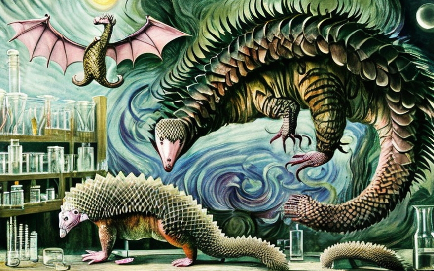
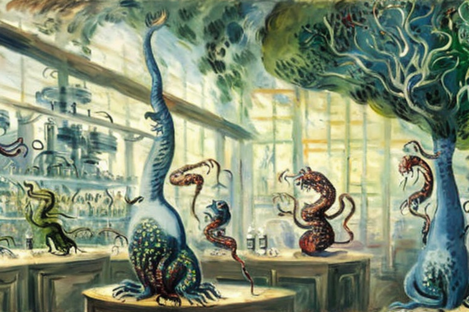
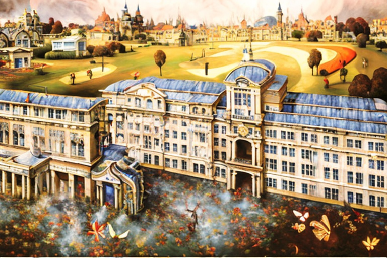

Ο παγκολίνος, η χελώνα, η νυχτερίδα και το βιολογικό εργαστήριο
Αρχική Σελίδα
Πίνακας Περιεχομένων
Το απαγορευμένο φιλί

Μια φορά κι έναν καιρό, σε ένα βιοεργαστήριο βαθιά στην καρδιά του δάσους, ένας παγκολίνος ονόματι Τίμος ήταν τρελά ερωτευμένος με μια χελώνα που ονομαζόταν Πηνελόπη. Ο Τίμος και η Πηνελόπη είχαν βρει παρηγοριά ο ένας στην παρέα του άλλου, μοιράζονταν ιστορίες από κλουβιά σε προηγούμενα βιοεργαστήρια, και ονειρευόντουσαν ένα μέλλον όπου θα μπορούσαν να είναι ελεύθεροι να ζουν όπως ήθελαν. Η αγάπη τους όμως ήταν απαγορευμένη, γιατί άνηκαν σε διαφορετικά είδη, και οι αυστηροί επόπτες του βιολογικού εργαστηρίου δεν θα επέτρεπαν ποτέ να συνεχιστεί μια τέτοια βδελυγμία.
Μια μέρα, καθώς στριμώχνονταν μαζί σε μια γωνιά του κλουβιού τους, ο Τίμος τόλμησε με θάρρος να σκύψει και να φιλήσει την Πηνελόπη. Ήταν μια τρυφερή, αθώα χειρονομία, που γεννήθηκε από μια αγνή και απελπισμένη αγάπη. Αλλά καθώς τα χείλη τους άγγιξαν, ένα παράξενο και ισχυρό ρίγος διέσχισε το σώμα τους, ανάβοντας συναγερμούς και σειρήνες σε όλο το εργαστήριο.
Χωρίς να το γνωρίζουν ο Τίμος και η Πηνελόπη, οι επιστήμονες του βιολογικού εργαστηρίου εργάζονταν σε ένα μυστικό έργο ώστε να δημιουργήσουν μια νέα μορφή ζωής, που θα ήταν αδιαπέραστη από ασθένειες και θα μπορούσε να επιβιώσει ακόμα και στα πιο σκληρά περιβάλλοντα. Είχαν πειραματιστεί με τη γενετική σύνθεση διαφόρων ζώων, συνδέοντας κλώνους DNA με την ελπίδα να δημιουργήσουν ένα νέο υπερδύναμο είδος.
Αλλά τα πειράματά τους πήγαν στραβά και το εργαστήριο είχε γίνει το έδαφος αναπαραγωγής τερατωδών πλασμάτων, το καθένα πιο τρομακτικό από το προηγούμενο. Ο Τίμος και η Πηνελόπη ήταν τα τελευταία θύματα αυτών των πειραμάτων και το απαγορευμένο φιλί τους είχε ενεργοποιήσει ακούσια το πιο επικίνδυνο πείραμα του εργαστηρίου.
Καθώς το εργαστήριο ταρακουνιόταν απο τους συναγερμούς, ο Τίμος και η Πηνελόπη ήξεραν ότι έπρεπε να δραπετεύσουν. Έτρεξαν μέσα στο λαβύρινθο των διαδρόμων, αποφεύγοντας τις φλόγες και τα φρικτά πλάσματα που τριγυρνούσαν στις αίθουσες. Αλλά ακριβώς όταν νόμιζαν ότι γλίτωσαν, ήρθαν αντιμέτωποι με τον επόπτη του βιολογικού εργαστηρίου, έναν τρελό επιστήμονα που ονομαζόταν Τζεκίλ.
Ο ιατρός Τζεκίλ ήταν ένας σκληρός και σαδιστής άνθρωπος, με εμμονή με τη γενετική και αποφασισμένος να βλέπει τα δημιουργήματά του να ζωντανεύουν, ανεξάρτήτως του κόστους. Χλεύασε τον Τίμο και την Πηνελόπη, με τα μάτια του να γυαλίζουν από ένα αρρωστημένο πράσινο φως. “Βλάκες”, είπε. “Βλέπετε τι καταφερατε; Εξαπολύσατε το απόλυτο όπλο, ένα πλάσμα που δεν μοιάζει με κανένα άλλο. Και όλα αυτά είναι χάρη στην ανόητη, απαγορευμένη αγάπη σας.”
Ο έρωτας της Πηνελόπης
Καθώς ο Τζεκίλ διαχώρισε τα δύο ζώα, η Πηνελόπη, ένιωθε ανήσυχη και ανεκπλήρωτη στη σχέση της με τον Τίμο. Πάντα την τραβούσαν οι νυχτερίδες που πετούσαν γύρω από το εργαστήριο, με τις μυστηριώδεις και δελεαστικές προσωπικότητες τους. Μια μέρα, δεν μπόρεσε να αντισταθεί στον πειρασμό και φίλησε μια νυχτερίδα που λεγόταν Βρούτος, προκαλώντας σοκ σε όλο το βιοεργαστήριο.
Ο παγκολίνος Τίμος έμεινε με ραγισμένη στην καρδιά. Ποτέ πριν δεν είχε νιώσει τόσο δυνατά συναισθήματα και δεν μπορούσε να καταλάβει γιατί η Πηνελόπη είχε φιλήσει τη νυχτερίδα όταν είχαν υποσχεθεί ότι θα ήταν πιστοί ο ένας στον άλλο.
Ο Τίμος δεν ήξερε ότι υπήρχαν αυστηροί κανόνες στο βιοεργαστήριο για την πρόληψη της απιστίας μεταξύ των επιλεγμένων ειδών για υβριδισμό. Οι επιστήμονες είχαν επιλέξει προσεκτικά ποια ζώα είχαν τη δυνατότητα να αλληλεπιδρούν μεταξύ τους και παρακολουθούσαν στενά τη συμπεριφορά τους για να εξασφαλίσουν ότι δεν είχαν ρομαντικές ή ερωτικές σχέσεις με άλλα ζώα.
Οι επιστήμονες ήταν εξοργισμένοι, γιατί είχαν περάσει χρόνια επιλέγοντας και εκτρέφοντας προσεκτικά τα ζώα για να δημιουργήσουν το τέλειο υβριδικό είδος. Είχαν ξοδέψει αμέτρητες ώρες μελετώντας τη γενετική σύσταση κάθε ζώου, αναλύοντας τη συμπεριφορά και τα χαρακτηριστικά της προσωπικότητάς τους και διασφαλίζοντας ότι ήταν το τέλειο ταίρι μεταξύ τους.
Όταν η Πηνελόπη φίλησε τον Βρούτο, έριξε στον βρόντο τα σχέδιά τους και απείλησε να εκτροχιάσει ολόκληρο το έργο τους. Γρήγορα ανέλαβαν δράση, επινοώντας ένα νέο σύνολο κανόνων για να αποτρέψουν τέτοια περιστατικά να επαναληφθούν. Διαχώρισαν τα ζώα σε διαφορετικούς θαλάμους και τους επέτρεπαν να αλληλεπιδρούν μόνο υπό αυστηρή επίβλεψη. Επίσης, εμφύτευσαν συσκευές παρακολούθησης σε κάθε ζώο για να παρακολουθούν τις κινήσεις τους και να διασφαλίζουν ότι κινούνται μέσα στις προκαθορισμένες περιοχές τους.
Παρά τα μέτρα αυτά, η Πηνελόπη και ο Βρούτος συνέχισαν να συναντιούνται κρυφά, κλέβοντας φιλιά όποτε μπορούσαν. Ο Τίμος, εν τω μεταξύ, ένιωθε όλο και πιο απομονωμένος και μόνος. Λαχταρούσε τις μέρες που εκείνος και η Πηνελόπη είχαν μοιραστεί έναν ιδιαίτερο δεσμό, αλλά τώρα φαινόταν ότι αυτός ο δεσμός είχε σπάσει για πάντα.
Η γέννηση του τέρατος

Ο Τζεκίλ έγειρε στην καρέκλα του και τράβηξε μια βαθιά ρουφηξιά από το τσιγάρο του.
“Εχεις ακουστα για αυτήν την νυχτερίδα, τον Βρούτο;” ρώτησε τον συνάδελφό του, τον ιατρο Μαρτίνεζ.
“Αυτός που πετάει και φιλάει ζώα άλλων ειδών;” Ο γιατρός Μαρτίνεζ απάντησε, σκύβοντας μπροστά με ενδιαφέρον.
“Αυτός είναι, ναι”, είπε ο Τζεκίλ, εκπνέοντας ένα σύννεφο καπνού. “Άκουσα ότι φίλησε μια χελώνα χθες. Μπορείς να φανταστείς τι είδους υβρίδιο μπορούμε να γεννήσουμε απ ́ αυτό;”
Ο γιατρός Μαρτίνεζ ανασήκωσε το φρύδι του. “Δεν νομίζω ότι θέλουμε να μάθουμε”, είπε. “Αν αυτά τα δύο είδη υβριδοποιηθούν, θα μπορούσε να έχει κάποιες απροσδόκητες συνέπειες”.
Ο γιατρός Τζεκίλ ανασήκωσε τους ώμους του. “Υποθέτω ότι έχεις δίκιο. Αλλά σκέψου τις δυνατότητες! Θα μπορούσαμε να δημιουργήσουμε ένα εντελώς νέο είδος, με χαρακτηριστικά τόσο από τη νυχτερίδα όσο και από την χελώνα. Μπορεί να είναι επαναστατικό.”
Ο γιατρός Μαρτίνεζ κούνησε το κεφάλι του. “Δεν είμαι σίγουρος ότι αξίζει το ρίσκο”, είπε. “Το τελευταίο πράγμα που χρειαζόμαστε είναι ένα άλλο τερατάκι φρανκενστάιν να τρέχει γύρω γύρω στο εργαστήριο”.
Όμως ο Τζεκίλ είχε ήδη χαθεί σε σκέψεις, οραματιζόμενος τις δυνατότητες ενός τέτοιου υβριδίου. Μπορούσε να το φανταστεί μπροστά του, ένα πλάσμα με τα φτερά και την ηχοτόπιση νυχτερίδας, σε συνδυασμό με το κέλυφος μια χελώνας. Θα ήταν ένα τρομερό αρπακτικό, ικανό να αφαιρέσει την ζωή θηραμάτων που κανένα άλλο ζώο δεν θα μπορεί να νικήσει.
Καθώς συνέχιζε να σκέφτεται, ο Τζεκίλ δεν παρατηρήσε τα δυσοίωνα σημάδια που άρχιζαν να εμφανίζονται στο εργαστήριο. Τα ζώα γίνονταν ανήσυχα και ταραγμένα, η συμπεριφορά τους γινόταν πιο ασταθής και απρόβλεπτη κάθε μέρα που περνούσε.
Και τότε, μια μοιραία νύχτα, συνέβη. Ο Βρούτος κατάφερε να βγει κρυφά από το κλουβί του και να σκορπίσει τα φιλιά του σε άλλα ζώα διαφορετικών ειδών, με αποτέλεσμα ένα καταστροφικό υβρίδιο που κανείς δεν μπορούσε να προβλέψει.
Το πλάσμα που αναδύθηκε από αυτές την ανίερες ένωσεις δεν έμοιαζε με κανένα άλλο. Είχε τα φτερά μιας νυχτερίδας, το καβούκι μιας χελώνας και τα νύχια μιας τίγρης. Ήταν ένα τέρας με όλη τη σημασία της λέξης και πεινούσε για αίμα.
Καθώς έτρεχε μέσα στο εργαστήριο, ξεσκίζοντας οτιδήποτε και οποιονδήποτε στο πέρασμά του, έσπασε ένα παράθυρο και κατάφερε να ξεφύγει στην πίσω αυλή, μια τρομακτική υπενθύμιση των συνεπειών της επιστημονικής αλαζονείας και ύβρεως.
Η Κατάσταση υπό έλεγχο

Καθώς ο Τζεκίλ και ο Μαρτίνεζ ερευνούσαν την καταστροφή που είχε προκληθεί από το υβρίδιο που διέφυγε, ήξεραν ότι έπρεπε να δράσουν γρήγορα. Το εργαστηριακό πρωτόκολλο για την αντιμετώπιση ενός τέτοιου συμβάντος είχε γραφθεί προσεκτικά, αλλά ήταν σαφές ότι απέτύχε σε αυτή την περίπτωση.
“Πρέπει να εφαρμόσουμε το σχέδιο έκτακτης ανάγκης”, είπε ο Μαρτίνεζ με τη φωνή του ζοφερή. “Πρέπει να βεβαιωθούμε ότι αυτές οι πληροφορίες δεν θα διαρρεύσουν στον Τύπο”.
Ο γιατρός Τζεκίλ έγνεψε καταφατικά. “Θα κάνω τις απαραίτητες κλήσεις”, είπε. “Πρέπει να απολυμάνουμε την περιοχή, να περιορίσουμε το πλάσμα και να καταστρέψουμε τυχόν στοιχεία”.
Ο Μαρτίνεζ έβγαλε ένα πρόχειρο και άρχισε να σημειώνει τους στόχους σε μια λίστα. “Θα χρειαστεί να δημιουργήσουμε μια περίμετρο γύρω από το εργαστήριο, χρησιμοποιώντας μη θανατηφόρες μεθόδους για να περιορίσουμε το υβρίδιο”, είπε. “Θα χρειαστεί επίσης να φέρουμε μια ομάδα για να καθαρίσει το χάος και τις ζημιές και να βεβαιωθούμε ότι δεν θα αφήσουν στοιχεία”.
Ο γιατρός Τζεκίλ μόρφασε. “Και τι γίνεται με το ίδιο το υβρίδιο;” ρώτησε.
“Θα πρέπει να το ναρκώσουμε και να το μεταφέρουμε σε μια ασφαλή εγκατάσταση”, απάντησε ο Μαρτίνεζ. “Από εκεί, μπορούμε να το μελετήσουμε και να καθορίσουμε την καλύτερη πορεία δράσης”.
Ο Τζεκίλ έγνεψε καταφατικά, με το μυαλό του να τρέχει με τις συνέπειες του συμβάντος. Ήξερε ότι δεν μπορούσαν να αντέξουν οικονομικά άλλα λάθη, ότι έπρεπε να φροντίσουν να μην ξαναγίνει τίποτα τέτοιο.
Καθώς άρχισαν να δουλεύουν, ο Τζεκίλ και ο Μαρτίνεζ ήξεραν ότι είχαν να κάνουν με ένα πλάσμα που δεν έμοιαζε με τίποτα που είχαν δει ποτέ πριν. Ήταν έξυπνο, προσαρμόσιμο και τρομακτικά επικίνδυνο και ήξεραν ότι θα χρειαζόταν όλη τους την ικανότητα και την πείρα για να το περιορίσουν.
Τελικά, πέτυχαν τις προσπάθειές τους, καταφέρνοντας να συγκρατήσουν το υβρίδιο και να απολυμάνουν την περιοχή προτού διαρρεύσει οποιαδήποτε πληροφορία στον Τύπο. Αλλά καθώς κάθονταν στα γραφεία τους, κοιτάζοντας τις ζημιές του βιοεργαστηρίου, ήξεραν ότι είχαν φτάσει πολύ κοντά στην καταστροφή.
Η αποφυγή της ευθύνης

Καθώς ο Τζεκίλ και ο Μαρτίνεζ κοιτούσαν τα σπασμένα παράθυρα του βιοεργαστηρίου, ήξεραν ότι υπήρχε πρόβλημα. Το υβρίδιο που δραπέτευσε είχε προκαλέσει τεράστιο πανικό και τα μέσα μαζικής ενημέρωσης συνέρεαν γύρω από την τοποθεσία, ρωτώντας για όποια πληροφορία μπορούν να καταγράψουν.
“Θα χάσουμε τη χρηματοδότησή μας αν αυτό διαρρεύσει προς τα έξω”, είπε ο Τζεκίλ με τη φωνή του ζοφερή. “Πρέπει να βρούμε έναν τρόπο να το βγάλουμε απο πάνω μας, να φανεί ότι δεν φταίμε εμείς”.
Ο γιατρός Μαρτίνεζ έγνεψε καταφατικά. “Χρειαζόμαστε έναν αποδιοπομπαίο τράγο”, είπε. “Κάποιον άλλο που ευθύνεται για τα υβρίδια, κάποιον εκτός απο εμάς”.
Καθώς έψαχναν για μια λύση, τα μάτια τους έπεσαν σε ένα κοντινό χωριό, ένα μικρό σύμπλεγμα σπιτιών φωλιασμένο στους πρόποδες. Λέγεται ότι οι γυναίκες του χωριού είχαν τη συνήθεια να φιλούν τις νυχτερίδες, πιστεύοντας ότι τους φέρνει καλή τύχη και ευημερία.
“Αυτές οι γυναίκες είναι οι υπεύθυνες”, είπε ο Τζεκίλ, με τη φωνή του να υψώνεται από ενθουσιασμό. “Αυτές δημιουργήσαν τα υβρίδια, όχι εμείς!”
Ο Μαρτίνεζ έγνεψε καταφατικά, αναγνωρίζοντας την φαεινή ιδέα. “Θα διαδώσουμε τη φήμη”, είπε. “Θα βεβαιωθούμε ότι όλοι γνωρίζουν ότι τα υβρίδια προήλθαν από το χωριό, όχι από το βιοεργαστήριο”.
Και έτσι, ο Τζεκίλ και ο Μαρτίνεζ άρχισαν να δουλεύουν, διαδίδοντας φήμες και ψίθυρους για το χωριό και τα επικίνδυνα πλάσματα που κρύβονταν μέσα. Περιέγραφαν τις γυναίκες ως απερίσκεπτες και ανεύθυνες, πρόθυμες να ρισκάρουν την ασφάλεια του κόσμου για δικό τους προσωπικό όφελος.
Και καθώς τα μέσα ενημέρωσης επισκέπτοταν το χωριό, ερευνώντας για μια ιστορία να πουλήσουν, βρήκαν την τέλεια αφήγηση στα επικίνδυνα υβρίδια και τις απερίσκεπτες γυναίκες που τα δημιουργούσαν.
Εν τέλει, το βιοεργαστήριο γλίτωσε, η χρηματοδότησή του εξασφαλίστηκε και η φήμη του παρέμεινε ανέπαφη. Αλλά όσο ο Τζεκίλ και ο Μαρτίνεζ παρακολουθούσαν τους χωρικούς να οδηγούνται με χειροπέδες, ήξεραν ότι είχαν δημιουργήσει ένα επικίνδυνο προηγούμενο, ότι είχαν αφήσει τις δικές τους εγωιστικές επιθυμίες και φιλοδοξίες να θολώσουν την κρίση και την ηθική τους.